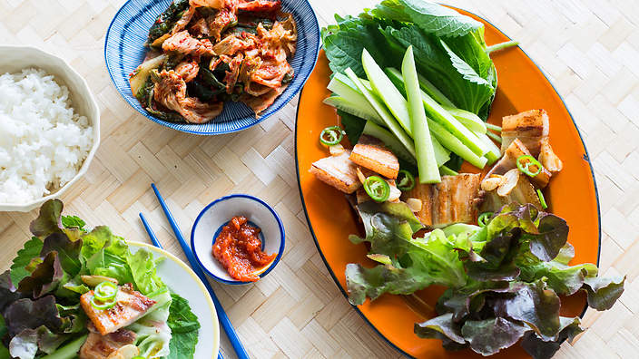

Home
Samgyupsal (Grilled Pork Belly)

Description
Pork belly is inexpensive, easy to cook, and delicious. The literal translation of “samgyupsal” is three layered meat (flesh, fat and skin), and it's very popular in Korea. It's best enjoyed wrapped in fresh lettuce, served with side dishes and a semi-sweet and spicy sauce called ssamjang.
Ingredients
- 500g boneless pork belly, cut into 1cm thick slices
- 5 to 8 cloves garlic, sliced (optional)
Seasoned sesame oil sauce
- 2 tbsp sesame oil
- 2 tbsp salt
- 1/2 tsp freshly cracked black pepper
Salad for ssam (wrap)
- 1 head Korean lettuce or other soft leaf lettuce (see Note)
- 20 kkaennip (wild sesame leaves) (see Note)
- 1 Korean or Lebanese cucumber, cut into thick long sticks (see Note)
- 4 mild green chillies, sliced or kept whole
- 1/4 cup ssamjang (seasoned chilli and soy bean paste) (see Note)
- cooked short grain rice and kimchi to serve
Steps
- Place a large non-stick frying pan or a grill pan over medium-high heat. Place slices of pork belly and cook in batches until the fat is rendered and the pork slices are golden brown. Turn the heat down if the pork starts to burn and take care not to overlap the pork belly slices when cooking. Cut pork belly into big bite-sized pieces.
- If desired, drain pork belly slices on a plate lined with paper towel. Continue cooking the rest of the pork belly slices and wipe excess pork fat off the pan between batches. The garlic slices can be cooked briefly with the pork belly until starting to colour, then transfer to a plate.
- Mix sesame oil, salt and pepper together. Arrange salad ingredients on a platter and serve ssamjang and seasoned sesame oil in individual serves. Wrap cooked pork belly slices in lettuce or sesame leaves with cucumber, chilli, ssamjang, rice, seasoned sesame oil and kimchi.
Note
Pork belly is usually cooked in the middle of the family dining table in a pan over a portable stove. Korean lettuce, Korean cucmumber, ssamjang, sesame leaves and kimchi are available at Korean food stores. If Korean lettuce or cucumber are unavailable, use red or green oak lettuce and Lebanese cucumber.
Recipe Source